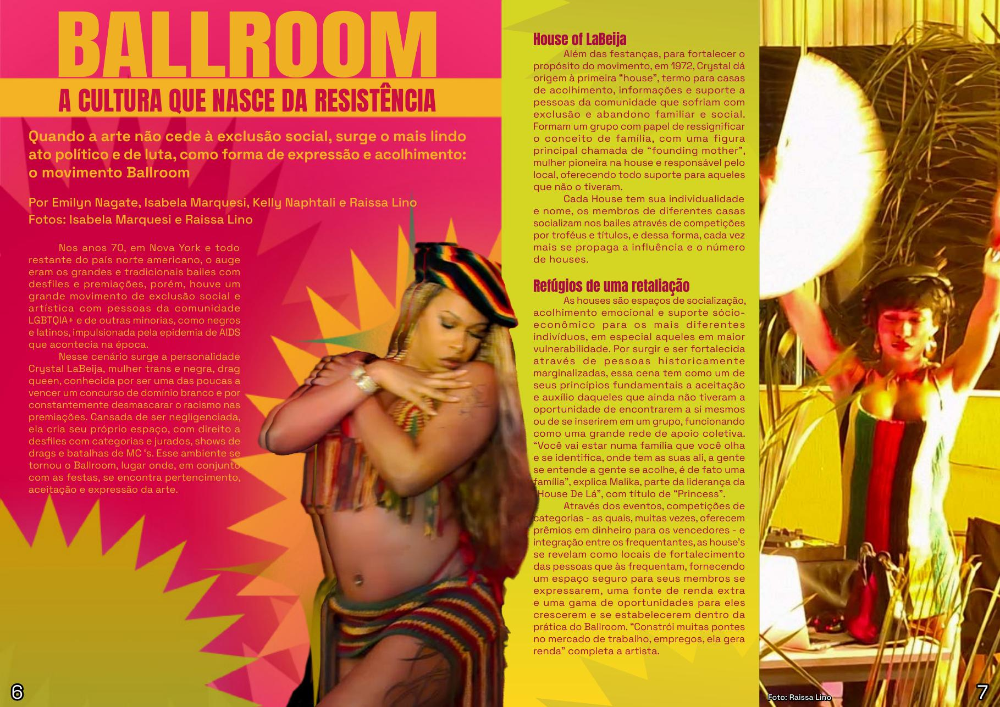

Reportagem de capa
Ballroom / Resistência
A cultura que nasce da resistência
Arte, acolhimento e família: como o Ballroom transforma exclusão em potência coletiva.
Todas as histórias em um só lugar
Reportagens, entrevistas, críticas e guias produzidos por nós e para a comunidade LGBTQIA+.
04 publicações
Matéria principalBallroom / Reportagem de capa
Editoria
Ballroom / Resistência
Arte, acolhimento e família: como o Ballroom transforma exclusão em potência coletiva.
 Entrevista
Entrevista
Educação / Pesquisa
O direito de produzir conhecimento a partir das nossas próprias vivências.
Editoria